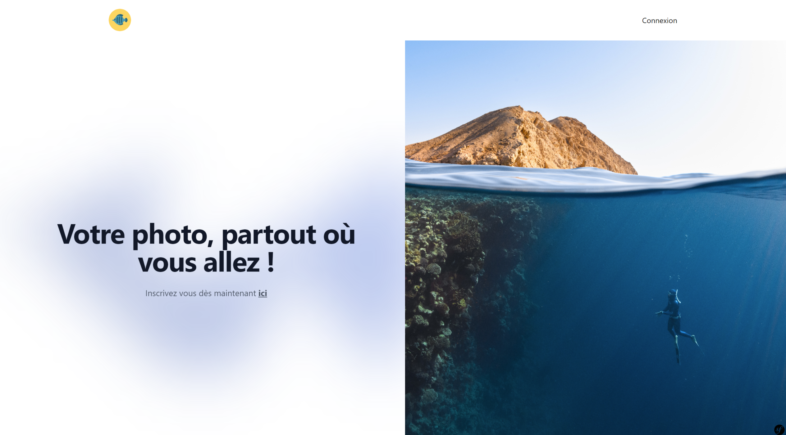
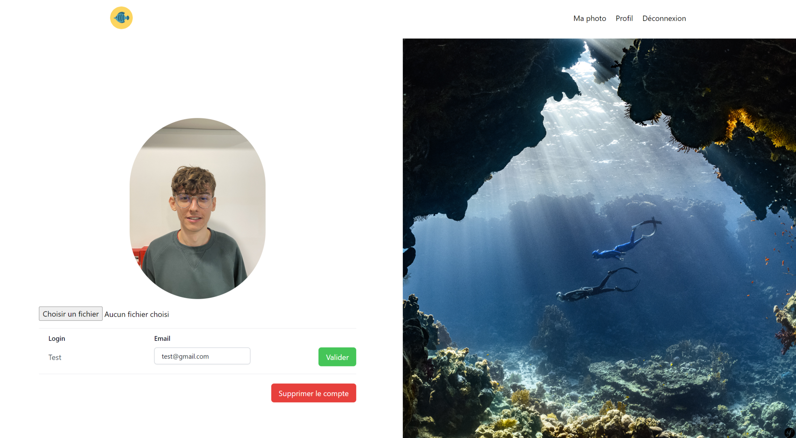

Contexte

Objectif : Créer un site web qui possède les mêmes caractéristiques que Gravatar :
• Le site permet de s’inscrire en précisant un login, un mot de passe, une adresse email et surtout une photo de profil.
• L’utilisateur peut modifier les informations de son compte, notamment son adresse email et sa photo de profil. Il peut même supprimer son compte.
• On peut accéder à l’image de profil à partir du code obtenu en chiffrant l’adresse email de l’utilisateur en MD5.
Ce service permet (en vous inscrivant) d’associer votre adresse mail à une photo de profil. Ainsi, à partir de votre adresse, les différents sites web et applications peuvent charger votre image de profil depuis ce service sans avoir besoin de stocker cette image de leur côté et sans demander à l’utilisateur d’uploader cette image. Il suffit de faire une simple requête à myAvatar.
Analyse
Lors de ce projet, j'ai pu me recentrer sur les compétences que j’avais acquises en symfony et j’ai aussi pu voir ce que je savais faire ou pas.
J’ai ainsi pu reproduire une partie des tds que j’avais réalisé en classe. J’ai donc revu les bases de symfony.
J’ai aussi appris à chiffrer une photo en MD5. J’ai pu améliorer mes compétences en Tailwind CSS. Nous avons choisi
d'implémenter cette technologie, car elle est plus optimisée que bootstrap par exemple. En effet, tailwind permet
d’importer directement les classes utilisées dans les vues au lieu de tout importer au début.
Par ailleurs, nous avons aussi décidé de mettre en place du Alpines JS pour notre menu. Cette technologie est extrêmement simple et elle
ne possède que quelques fonctions à connaître. Ainsi, on peut réaliser les mêmes choses que du JavaScript classique.
Ce projet nous a permis d’appliquer les notions que nous avions déjà vues en td. Néanmoins, nous avons pu implanter les technologies qui nous semblent adaptées et qui nous plaisent, que ce soit Tailwind CSS ou Alpines JS.
Améliorations

Après avoir travaillé sur ce projet pendant plusieurs semaines, le site web est totalement fonctionnel. Je n'ai aucune amélioration à apporter à celui-ci, car il est plutôt simple sur le principe. L'objectif du produit est d’avoir une photo de profil associée à son email. Selon moi, il doit rester épuré pour ne pas mélanger l’utilisateur.